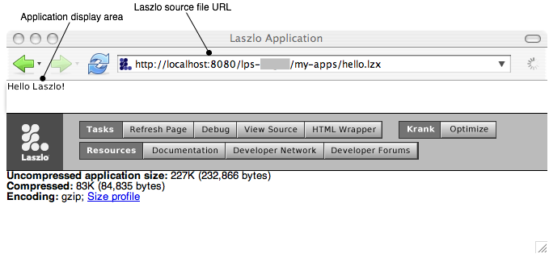
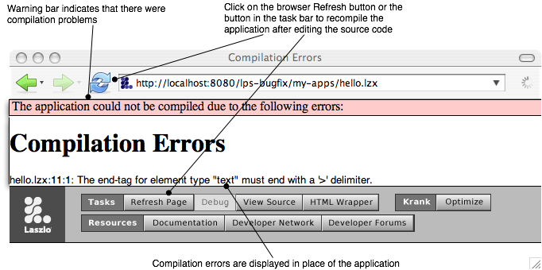
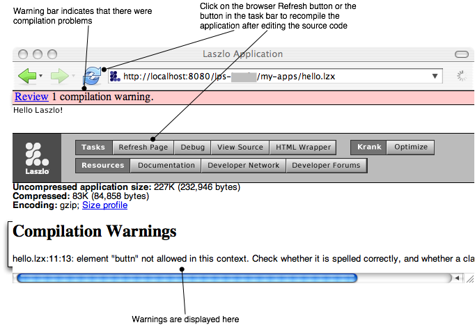

This chapter summarizes information about OpenLaszlo application structure and mechanics that an experienced programmer will need in order to start playing with code.
This discussion is necessarily abbreviated and incomplete; its purpose is merely to point you in the right direction. As you begin to write LZX applications, you should also work through the tutorials.
The program development cycle differs somewhat depending on whether you deploy your application proxied or SOLO. Developing proxied applications is the simpler case, so we'll start with that here.
The process of developing an OpenLaszlo application can be summarized:
Each of these steps is described in turn below.
The way to start the OpenLaszlo Server (OLS) depends on the operating system and how it was installed. On Windows, typically you start OLS from the Start menu; on Mac OS X the default installation places the OpenLaszlo launch icon on your desktop. If you don't have the OpenLaszlo Server installed on your machine, you can download it from http://www.laszlosystems.com/developers/
Because LZX files are XML documents, you can use any text or XML editor to create and edit source. Filenames must end with the .lzx extension. As you write, you'll want to have the LZX Reference Manual handy. See below for a discussion of how to use this document efficiently.
In order to be compiled by the OpenLaszlo Server, files must be placed in subdirectories of the following path:
[Windows]
c:\Program Files\Laszlo Presentation Server @VERSIONID@\jakarta-tomcat-5.0.24\webapps\lps-@VERSIONID@\
[MacOS]
Macintosh HD:/Applications/Laszlo Presentation Server @VERSIONID@/jakarta-tomcat-5.0.24/webapps/lps-@VERSIONID@:
Typically you will create a directory with a name such as
my-apps in which to place programs under development. You
can nest subdirectories, such as
my-apps/practice/samples
so long as they are under the correct path to LPS.
In order to run your program, simply load it into your browser. The exact URL depends on the configuration of the server, but will typically look something like:
http://localhost:8080/lps-@VERSIONID@/path to your directory
The OpenLaszlo Server checks the source files for valid syntax, compiles them, caches the executables and makes the application immediately visible in the browser:
If the Sever detects errors that prevent compilation, error messages are displayed in the browser:
If it detects non-critical errors or questionable constructs that do not prevent compilation, warning messages are displayed in the browser below the application (you may have to scroll down to see them):
Runtime errors are displayed in the debugger, if the debugger is running.
See
After you've made changes to the source, simply click the Refresh button on the browser. The OpenLaszlo Server automatically rechecks the source for syntax, then recompiles, re-caches and makes the application visible in the browser.
Optimize your program using the techniques in
See
The canonical "Hello, World" program can be written in LZX:
This program illustrates three essential features of all Laszlo applications:
<canvas> tag and close with
</canvas>The next section discusses the ingredients of a typical Laszlo application. See also the example programs, and the user-contributed programs at http://www.mylaszlo.com, to get a feel for the general structure of LZX applications.
Typical Laszlo applications contain the following parts, which are discussed briefly in turn below
The root node of every Laszlo application is the
If you do not set the height and width, the canvas — like other views — sizes itself to the size of the views it contains. Unlike other views, the canvas, by default, has a nonzero width and height: it sizes itself to the HTML page that contains it. Therefore the null LZX application
defines an invisible object that is the size of the page.
In addition to its height and width, the canvas has several other
visible attributes. The background color, defined by the
Within LZX applications, you can embed arbitrary Javascript
functions by nesting them in
is an allowed structure while
Wrong! The
is illegal.
In LZX the
The value of the outer view's background color can be referenced as
v1.bgcolor or outer_view.bgcolor. The
background color of the inner view can be referenced as
v2.bgcolor from anywhere within the application. To
reference it by name from outside of outer_view.inside_view.bgcolor.
Objects that are named children of the canvas can be simply addressed. For example, consider
The view artichoke. That
is, it is not necessary to reference it as
canvas.artichoke.
The view is the basic visible element in an OpenLaszlo application. Anything that is displayed on the canvas is a view (or an object that is an instance of a class that extends view).
A view is only visible if it has color, or text, or an image assigned to it, and if the height and width of the view are greater than zero. For example, the following code would display only two images even though four views are defined. The second and third views exist but they are completely invisible. The second has no color assigned to it and the third has zero height. They still, however, effect the arrangement of the other two views.
Views can also contain other views, allowing you to create complex visual elements. Each 'parent' view can have any number of children. By default, each child view is positioned relative to the top-left corner of its parent as shown in the example.
Although it is always possible to position any view by specifying
its horizontal (
Consider the following application:
Running the example above also shows that the width and height of a view can be different than the dimensions of the bounding box of its child views. No clipping occurred on the "yellow" view even though it lies outside the boundary of its parent.
If no width and height are actually defined for a view, then it will adopt the width and height of the bounding box not its subviews. If clipping is desired, however, then the attribute clip="true"
can be added to the parent, which would look like the following.
In addition to showing text and color, views are used to display, or play, media files of various formats, such as .gif, .jpeg, .png, .swf, and .mp3, for example. These resources may be compiled into the application or brought in at run time; they can be on the OpenLaszlo server or on a remote back end, and can be referenced by relative paths or absolute ids.
LZX derives much of its power from its unique implementation of data binding, in which the contents of a view are determined by the contents of a dataset. A dataset is simply a named hierarchy of XML data that has a single root node. All data in LZX applications is contained in datasets.
The concept of data binding implies more than the use of views to display XML data; rather the data itself can determine the size, color, contents, placement, etc. of views, and even cause views to be created or destroyed.
Consider the following program:
In the above example, the one line
<view datapath="ds:/record">
Causes three views to be created, and the line
<text datapath="@name" bgcolor="$path{@color}" x="$path{@x}"/>
causes each view's textual content, background color and
The source code for an LZX application can be contained in a single file; such files can grow quite large and thus hard to manipulate and maintain. By dividing your application into a number of smaller files, however, you can increase maintainability and understandability of your application. You can even break deep view hierarchies into multiple files to improve modularity, clarity, and source code organization.
This tag allows you to specify the name of a file to be include at any point in your application. The file to be included can be a library, a view, or text.
When the target is a library file (an XML file whose root element
is
The semantics for including views and text are analogous but slightly different. Unlike including a library file, a non text or view file is inserted once each time it's included.
These take the form
<!-- comment -->
and may appear between (but not within) tags in XML text. XML does not have a separate syntax for line ending comments, and does not allow nested comments.
Often when debugging you find yourself commenting out sections of code. Because it's illegal to nest XML comments within XML comments, this technique does not work for commented sections of declarative LZX. A good way around this problem is to use XML processing instructions which are of the form
<?ignore ?>
So, to comment out the blue and green views below,
Lines between <?ignore and ?> are ignored
End of the
In script, block comments are of the form
/* comment */
Line ending comments start with // and continue to the end of the line:
// line comment
<script> /* script comments look like this */ some.method() // this is an example of comment syntax <!-- ERROR! do not enclose XML comments in script! --> </script> // ERROR! Do not include script comments in XML!
The OpenLaszlo system includes an interactive debugger that can be compiled into any application. The debugger displays run time errors, and can be used interactively to inspect and set any tag attributes or JavaScript fields.
You can also use the JavaScript
To invoke the debugger, set the attribute debug="true"
in the
To use the debugger interactively to inspect a value, you type an expression in to the evaluation pane. For example,
In the evaluation pane, type,
sam.setAttribute('x', 50)
and press return. The view named
See
The OpenLaszlo Server contains a code viewer that you can
use to inspect any XML file in the lps directory, including, of
course, .lzx sources. When used to read .lzx files, the viewer
displays syntactically-colored sources, as well as a list of
cross-references such as classes, libraries and art assets. To invoke
the veiwer, in a browser window enter the URL to /lps-@VERSIONID@/lps/utils/viewer/viewer.jsp and
supply the name of the file you want to view as a file= request type, for example:
http://localhost:8080/lps-@VERSIONID@/lps/utils/lps/viewer.jsp?file=/my-apps/copy-of-hello.lzx